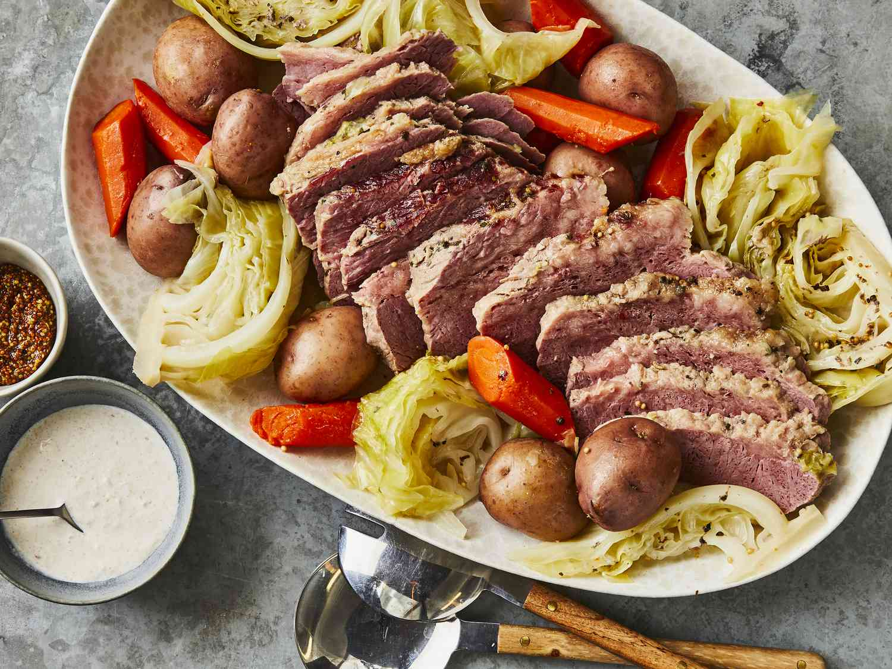

Slow-Cooker Corned Beef and Cabbage

Description
Cook this corned beef in a slow cooker all day, and you're guaranteed success — no more dry corned beef! Serve with soda bread for a warm and satisfying meal.
Ingredients
- 10 baby red potatoes, quartered
- 4 large carrots, peeled and cut into matchstick pieces
- 1 onion, peeled and cut into bite-sized pieces
- 4 cups water
- 1 (4 pound) corned beef brisket with spice packet
- 6 ounces beer
- 1/2 head cabbage, coarsely chopped
Steps
- Place potatoes, carrots, and onion into the bottom of a slow cooker; add water and place brisket on top of vegetables. Pour beer over brisket; sprinkle over spices from the packet and cover.
- Cook on High for 7 hours; stir in the cabbage and cook for 1 more hour.